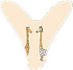

<ion-view><ion-nav-buttons side="right"><!----><!----><!---->   <a class="button button-clear icon ion-ios-search-strong" href="#/tabs/search">搜</a>&nbsp;&nbsp;&nbsp;&nbsp; <a class="button button-clear icon ion-videocamera" href="#/tabs/live">直播</a></ion-nav-buttons><ion-header-bar class="bar-subheader"><!--导航条--><ion-scroll direction="x" scrollbar-x="false" style="overflow: hidden"><div class="nov"><a class="button button-light" ng-repeat="tou in tous">{{tou.tname}}</a></div></ion-scroll><a class="button button-light" style="float: right" ng-click="novx()"><i class="icon ion-chevron-down"></i></a></ion-header-bar><!--content内容--><ion-content style="height:0; z-index: 99" class="btns"><ion-scroll direction="y"><ion-header-bar><button class="button button-dark button-clear change" ng-click="huan($event)">切换栏目</button> <button class="button button-small button-light" ng-click="novy()"><i class="icon ion-chevron-up"></i></button></ion-header-bar><div class="button button-stable button-small lv" ng-repeat="tou in tous"><span ng-if="lutong==true">+</span> {{tou.tname}}</div></ion-scroll></ion-content><ion-content on-drag="dragOpenSlide()"><!--侧滑框--><ion-slide-box show-pager="false" delegate-handle="mainSlideBox" on-slide-changed="slideChanged($index)"><!--<ion-slide>--><!--<ion-item ng-repeat="num in [0,1,2,3,4,5,6,1,1,1,1,1,1,1,1,1,1,1,1,1,1] track by $index">--><!--{{num}}--><!--</ion-item>--><!--</ion-slide>--></ion-slide-box><!--下拉刷新--><ion-refresher pulling-text="下拉刷新..." on-refresh="doRefresh()" on-pulling="doSome()" spinner="lines" refreshing-text="正在刷新..."></ion-refresher><!--轮播图--><mg-slide-box source-array="news.adsArray"></mg-slide-box><!--请求的数据内容--><ion-list><ion-item ng-repeat="item in items | orderBy:item.priority" class="content" ng-click="goToNewsDetail($index)"><!--一张图--><div class="firstDiv" ng-if="!item.imgnewextra && item.imgType != '1'"> <span class="item-text-wrap">{{item.title}}</span> <span>{{item.recSource}}</span> <span>{{item.replyCount}}跟帖</span></div><!--三张图--><div class="secondDiv" ng-if="item.imgnewextra && item.imgType != '1'"><span class="item-text-wrap" style="display:block;margin-bottom: 10px">{{item.title}}</span>    <span>{{item.recSource}}</span> <span>{{item.replyCount}}跟帖</span></div><!--一张大图--><div class="thirdDiv" ng-if="item.imgType=='1'"><span class="item-text-wrap" style="display: block;margin-bottom: 10px">{{item.title}}</span>  <span>{{item.recSource}}</span> <span>{{item.replyCount}}跟帖</span></div></ion-item></ion-list><!--上拉加载--><ion-infinite-scroll on-infinite="loadMore()" distance="1%" spinner="android" icon="ion-load-a" immediate-check="true" ng-if="isShowInfinite"></ion-infinite-scroll></ion-content></ion-view>